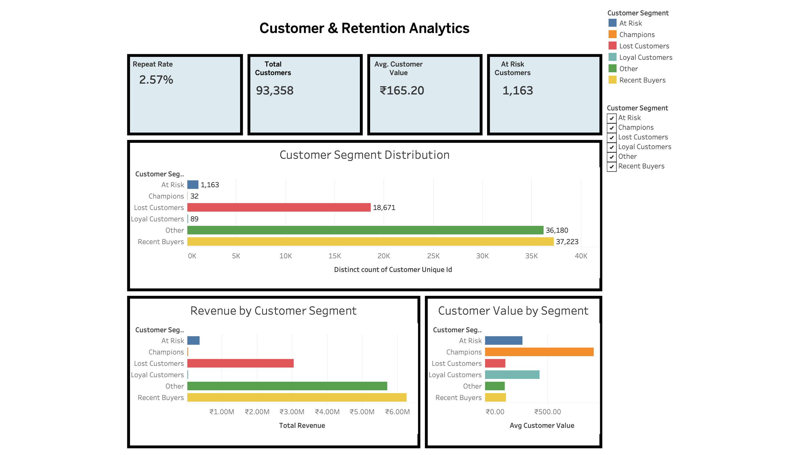
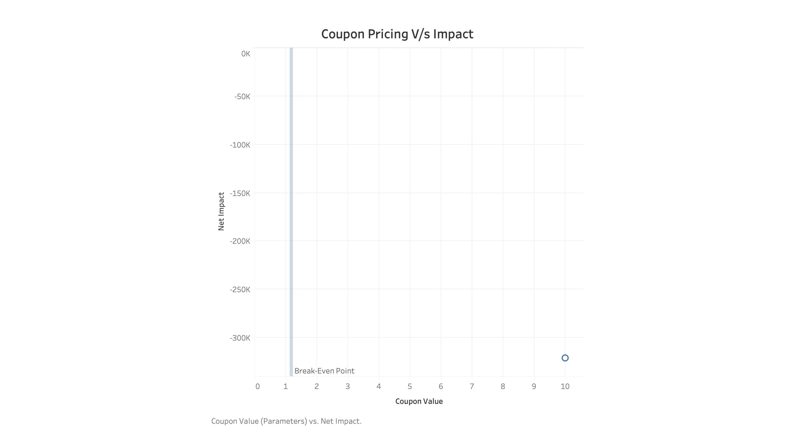
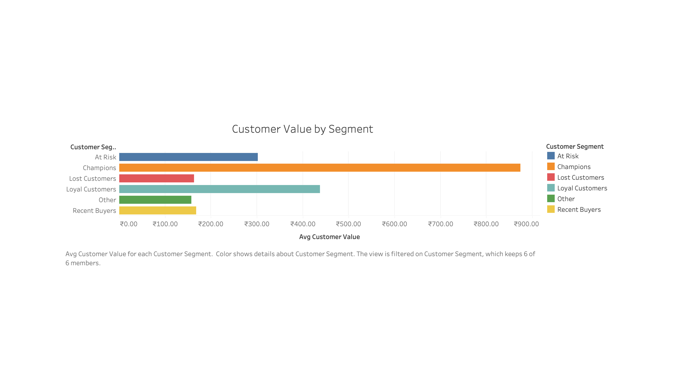
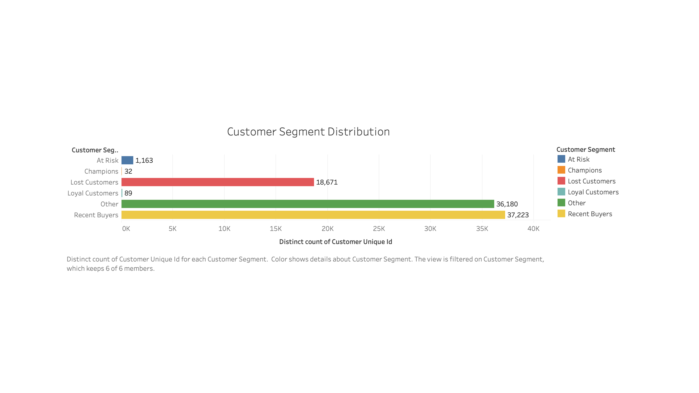

01 · PROJECT OVERVIEW
Olist E-Commerce Analytics
An end-to-end analytics project focused on customer behavior, retention, customer value, segmentation, revenue performance, and coupon/experiment analysis using MySQL and Tableau.
Olist's multi-table marketplace data was analyzed to understand customer behavior, retention, customer value, segmentation, revenue performance, and coupon experiment economics.
The workflow moves from raw source data through validation, customer-level modeling, SQL analysis, and Tableau visualization to produce business-facing customer and experiment insights.
Raw Olist Data
The analysis begins with Olist's multi-table marketplace dataset, covering customers, orders, order items, payments, reviews, products, and related source tables.
Validate & Prepare the Data
Before analysis, the source tables were validated for consistency across customers, orders, order items, and payments. Duplicate and missing-value checks were used to verify the analytical foundation.
The validated data was prepared for customer-level analysis and the creation of a Customer 360 analytical layer.
Olist Data Model
The validated source tables were organized into a structured analytical model connecting customer, order, item, payment, review, and product information with customer-level analytical tables.
The model provides the foundation for Customer 360, RFM analysis, segmentation, and downstream reporting.
Customer & Revenue Analysis
MySQL was used to turn the analytical model into customer and business insights across retention, RFM/customer value, segmentation, and revenue performance.
One-time vs repeat customer behavior.
RFM / Customer ValueRecency, frequency, monetary value, and customer segmentation.
Revenue AnalysisRevenue performance across customer segments and geography.
Customer & Retention Analytics
The SQL-derived analytical layer is translated into interactive Tableau dashboards covering customer retention, segmentation, customer value, revenue contribution, and coupon/experiment performance.
The final dashboards turn the analysis into business-facing customer and experiment insights.
Customer & Retention Analytics
The customer analytics dashboard provides a customer-level view of retention, segmentation, customer value, and revenue contribution.

Coupon / Experiment Analysis
The coupon experiment dashboard evaluates treatment versus control performance across retention lift, incremental customer value, coupon cost, break-even economics, and ROI.

04 · BUSINESS QUESTION
Business Question
How can Olist use customer behavior, retention, segmentation, and coupon performance analysis to improve customer value and make better retention decisions?
The analysis focuses on understanding how customers behave after their first purchase, which customer segments contribute the most value, and whether coupon-driven retention creates enough incremental value to justify its cost.
CUSTOMER RETENTION
How large is the repeat-customer opportunity, and where can Olist improve customer retention?
CUSTOMER VALUE
Which customer segments contribute the most revenue and customer value, and how do their behaviors differ?
COUPON ECONOMICS
Does the increase in repeat behavior from the coupon justify the economic cost of the incentive?
05 · DATASET
Dataset & Analytical Views
The Olist dataset contains multiple related marketplace tables covering customers, orders, order items, payments, products, sellers, and reviews. The data was cleaned, validated, modeled, and transformed into an analytical layer for customer and e-commerce analysis.
The resulting analytical layer supports two complementary Tableau views: Customer & Retention Analytics and Coupon / Experiment Analysis.
Olist marketplace source tables covering customers, orders, items, payments, products, sellers, and reviews.
Data-quality checks, consistency validation, cleaning, and preparation of the source tables for analysis.
Customer-level metrics, retention measures, RFM-style segmentation, customer value, revenue analysis, and coupon experiment metrics.
Business-facing dashboards that turn the analytical results into interactive customer and experiment insights.





07 · KEY INSIGHTS
Business Insights
Retention Opportunity
Repeat purchasing represents a relatively small share of the customer base, highlighting an opportunity for stronger retention-focused strategies.
Customer Value Varies
Customer segments differ substantially in size, revenue contribution, and average customer value, supporting differentiated customer strategies.
Positive Retention Response
The treatment group shows a higher 90-day repeat rate than the control group, indicating a positive retention response to the coupon.
Retention Lift vs Cost
The coupon improves repeat behavior, but the modeled coupon cost exceeds the incremental customer value at the tested coupon value, resulting in negative ROI.
08 · BUSINESS IMPACT / CONCLUSION
Business Impact / Conclusion
The analysis combines customer-level retention, segmentation, customer value, revenue contribution, and coupon performance to identify where the business can improve customer relationships and make more informed commercial decisions.
The results show that customer value and revenue are concentrated across specific customer segments, while a large share of customers falls into recent-buyer, other, or lost-customer groups. This creates opportunities to improve retention, strengthen repeat purchasing, and focus resources on higher-value customer segments.
Prioritize retention and customer-value strategies over broad, undifferentiated promotions. Focus re-engagement efforts on valuable at-risk and lost customers, strengthen relationships with high-value customers, and use customer segmentation to guide targeted campaigns.
For coupon-based promotions, the analysis indicates that higher coupon value can improve repeat purchasing but does not necessarily produce positive economics. The observed break-even coupon value is approximately ₹1.17, while the ₹10 coupon scenario produces negative ROI. Coupon strategies should therefore be evaluated against incremental customer value rather than retention lift alone.
The strongest opportunity is to connect customer retention with customer economics — increasing repeat purchases while ensuring that the cost of incentives does not outweigh the incremental customer value.
08 · DATASET
Explore Dataset
This project uses the Brazilian E-Commerce Public Dataset by Olist, covering approximately 100,000 orders across multiple related datasets. The data includes customers, orders, order items, payments, products, sellers, reviews, and geolocation information.